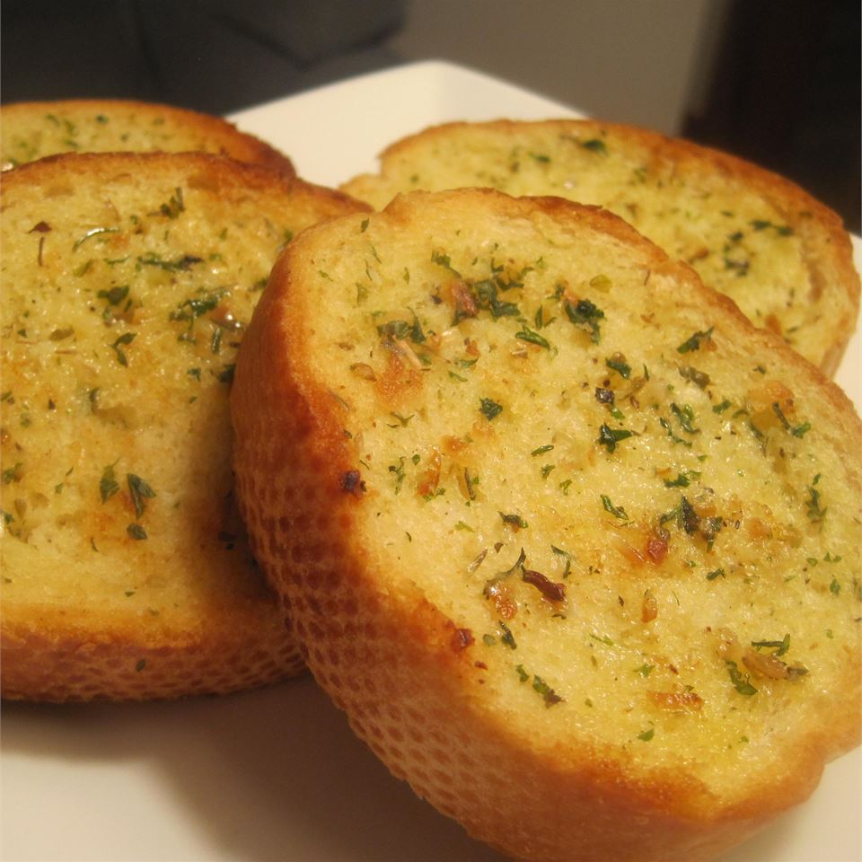

Garlic bread

Description
Garlic bread (also called garlic toast) consists of bread (usually a baguette or sour dough like a ciabatta), topped with garlic and olive oil or butter and may include additional herbs, such as oregano or chives
Ingredients
- ½ cup butter, softened
- ¼ cup grated Parmesan cheese
- 2 cloves garlic, minced
- ¼ teaspoon dried marjoram
- ¼ teaspoon dried basil
- ¼ teaspoon fines herbs
- ¼ teaspoon dried oregano
- ¼ teaspoon dried parsley, or to taste
- ground black pepper to taste
- 1 loaf unsliced Italian bread
Steps
- Preheat the oven to 350 degrees F (175 degrees C).
-
Mix butter, Parmesan cheese, garlic, marjoram, basil, fines herbs, oregano, parsley, and pepper together in a bowl until thoroughly combined.
Step 3
- Slice Italian bread loaf in half lengthwise; spread each half generously with the garlic butter mixture. Transfer onto a baking sheet.
- Bake on the top rack of the preheated oven until butter mixture melts and bubbles, about 10 to 15 minutes. Turn on the oven's broiler and broil until the bread is your desired shade of golden brown, 1 to 2 more minutes.